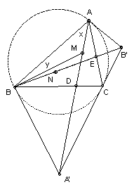

ABC is an acute angled triangle. The tangent at A to the circumcircle meets the tangent at C at the point B'. BB' meets AC at E, and N is the midpoint of BE. Similarly, the tangent at B meets the tangent at C at the point A'. AA' meets BC at D, and M is the midpoint of AD. Show that ∠ABM = ∠BAN. If AB = 1, find BC and AC for the triangles which maximise ∠ABM.

Solution
Answer: BC = AC = √2.
We use the triangle ABA' to find x. Let O be the center of the circle and R its radius. Then angle OBA' = 90o and ∠A'OB = 1/2 ∠BOC = ∠A, so BA' = R tan A. Also ∠AOB = 2∠C, so AB = 2R sin C. ∠A'BA = ∠A, so ∠A'BA = ∠A + ∠B. Hence ∠AA'B = 180o - ∠A - ∠B - x = ∠C - x. Now from the sine rule, AB/sin AA'B = A'B/sin x. Hence sin(∠C - x) = 2 sin ∠C sin x cot ∠A. So sin ∠C cos x - cos ∠C sin x = 2 sin ∠C sin x cot ∠A. Hence cot x = cot ∠C + 2 cot ∠A.
Applying the sine rule to BMA and BMD gives sin y/sin x = MA/MB = MD/MB = sin MBD/sin MDB = sin(B - y)/sin(B + x), or sin y sin(B + x) = sin x sin(B - y). Expanding and dividing through by sin x sin y sin B gives cot x + cot B = cot y - cot B, or cot y = 2 cot B + cot x = 2 cot A + 2 cot B + cot C. This is symmetric between A and B, so cot ABM = cot BAN. But cot is strictly decreasing over 0o to 180o, so ∠ABM = ∠BAN.
We want to maximise ABM or minimise cot ABM and hence minimise 2 cot A + 2 cot B + cot C. But 2 cot A + 2 cot B = 2 sin(A+B)/(sin A sin B) = 4 sin C/(cos(A - B) - cos(A + B) ) = 4 sin C/(cos(A - B) + cos C) ≥ 4 sin C/(1 + cos C) with equality iff A = B. Thus we must take A = B. We then want to minimise 4 sin C/(1 + cos C) + cot C = 4 (2 sin k cos k)/(2 cos2k) + (1 - tan2k)/(tan k + tan k), where k = C/2, and hence to minimise 7/2 tan k + 1/(2 tan k). That is achieved by taking tan k = 1/√7 (eg complete the square), and hence sin C = sin 2k = 2 tan k/(1 + tan2k) = (√7)/4. Since A = B, we have AC = BC and 1 = AB = 2 AC sin k = 2 AC 1/√8. Hence AC = √2.
© John Scholes
jscholes@kalva.demon.co.uk
16 Oct 2002